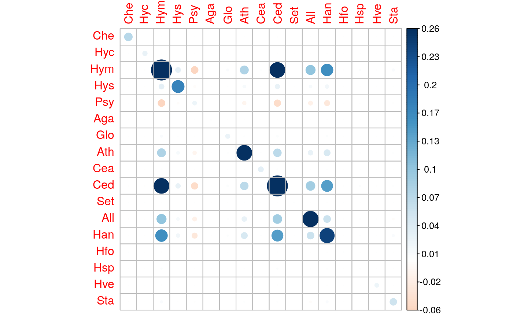
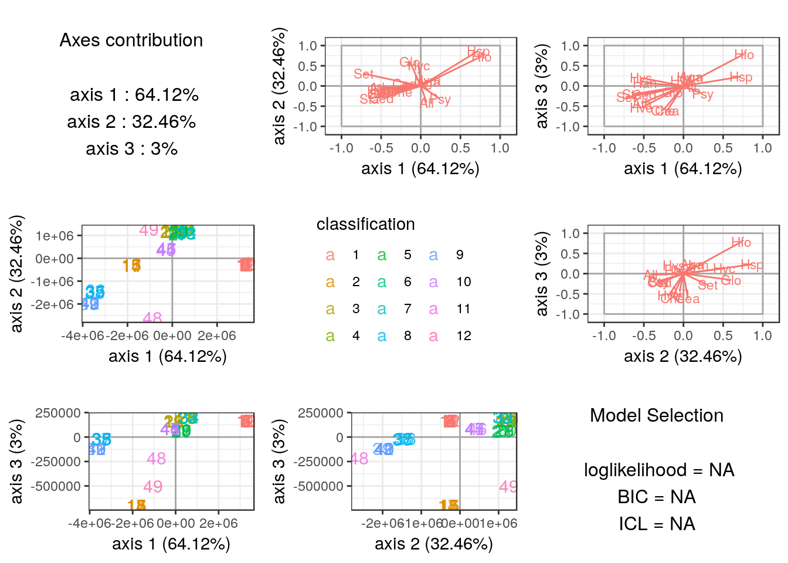
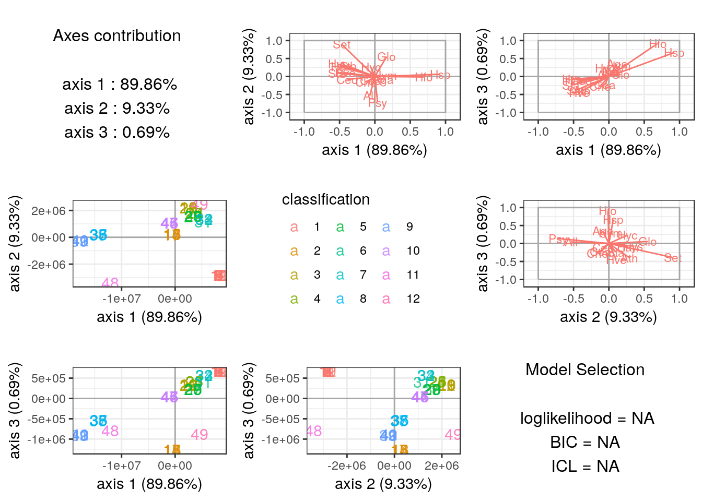

vignettes/PLNLDA.Rmd
PLNLDA.RmdThis vignette illustrates the basical use of the PLNLDA function and the methods accompaning the R6 Classes PLNLDA and PLNLDAfit.
The packages required for the analysis are PLNmodels plus some others for data manipulation and representation:
We illustrate our point with the trichoptera data set, a full description of which can be found in the corresponding vignette.
data(trichoptera)The trichoptera data frame stores a matrix of counts (trichoptera$Abundance), a matrix of offsets (trichoptera$TotalCounts) and some vectors of covariates (trichoptera$Wind, trichoptera$Temperature, etc.) In the following, we’re particularly interested in the trichoptera$Group discrete covariate which corresponds to disjoint time spans during which the catching took place. The correspondance between group label and time spans is:
| Label | Number of Consecutive Nights | Date |
|---|---|---|
| 1 | 12 | June 59 |
| 2 | 5 | June 59 |
| 3 | 5 | June 59 |
| 4 | 4 | June 59 |
| 5 | 4 | July 59 |
| 6 | 1 | June 59 |
| 7 | 3 | June 60 |
| 8 | 4 | June 60 |
| 9 | 5 | June 60 |
| 10 | 4 | June 60 |
| 11 | 1 | June 60 |
| 12 | 1 | July 60 |
In the vein of Fisher (1936) and Rao (1948), we introduce a multi-class LDA model for multivariate count data which is a variant of the Poisson Lognormal model of Aitchison and Ho (1989) (see the PLN vignette as a reminder). Indeed, it can viewed as a PLN model with a discrete group structure in the latent gaussian space.
This PLN-LDA model can be written in a hierachical framework where a sample of \(p\)-dimensional observation vectors \(\mathbf{Y}_i\) is related to some \(p\)-dimensional vectors of latent variables \(\mathbf{Z}_i\) and a discrete structure with \(K\) groups in the following way: \[\begin{equation} \begin{array}{rcl} \text{group structure } & \mathbf{\mu}_i = \mu_{g_i} & g_i \in \{1, \dots, K\} \\ \text{latent space } & \mathbf{Z}_i \quad \text{indep.} & \mathbf{Z}_i \sim \mathcal{N}({\boldsymbol\mu}_i, \boldsymbol{\Sigma}) & \\ \text{observation space } & Y_{ij} | Z_{ij} \quad \text{indep.} & Y_{ij} | Z_{ij} \sim \mathcal{P}\left(\exp\{Z_{ij}\}\right) \end{array} \end{equation}\]where \(g_i\) denotes the group sample \(i\) belongs to.
The different parameters \({\boldsymbol\mu}_k \in\mathbb{R}^p\) corresponds to the group-specific main effects and the variance matrix \(\boldsymbol{\Sigma}\) is shared among groups. An equivalent way of writting this model is the following: \[\begin{equation} \begin{array}{rcl} \text{latent space } & \mathbf{Z}_i \sim \mathcal{N}({\boldsymbol\mu}_i,\boldsymbol\Sigma) & \boldsymbol{\mu}_i = \mathbf{g}_i^\top \mathbf{M} \\ \text{observation space } & Y_{ij} | Z_{ij} \quad \text{indep.} & Y_{ij} | Z_{ij} \sim \mathcal{P}\left(\exp\{Z_{ij}\}\right), \end{array} \end{equation}\]where, with a slight abuse of notation, \(\mathbf{g}_i\) is a group-indicator vector of length \(K\) (\(g_{ik} = 1 \Leftrightarrow g_i = k\)) and \(\mathbf{M} = [\boldsymbol{\mu}_1^\top, \dots, \boldsymbol{\mu}_K^\top]^\top\) is a \(K \times p\) matrix collecting the group-specific main effects.
where \(\boldsymbol\Theta\) is a \(d\times p\) matrix of regression parameters.
Given:
where \(\boldsymbol{\Phi}_{PLN}(\bullet; \boldsymbol{\mu}, \boldsymbol{\Sigma})\) is the density function of a PLN distribution with parameters \((\boldsymbol{\mu}, \boldsymbol{\Sigma})\). \(f_k(\mathbf{Y})\) and \(p_k\) are respectively plug-in estimates of (i) the probability of observing counts \(\mathbf{Y}\) in a sample from group \(k\) and (ii) the probability that a sample originates from group \(k\).
The posterior probability \(\hat{\pi}_k(\mathbf{Y})\) that observation \(\mathbf{Y}\) belongs to group \(k\) and most likely group \(\hat{k}(\mathbf{Y})\) can thus be defined as \[\begin{equation} \begin{aligned} \hat{\pi}_k(\mathbf{Y}) & = \frac{p_k f_k(\mathbf{Y})}{\sum_{k' = 1}^K p_{k'} f_{k'}(\mathbf{Y})} \\ \hat{k}(\mathbf{Y}) & = \underset{k \in \{1, \dots, K\}}{\arg\max} \hat{\pi}_k(\mathbf{Y}) \end{aligned} \end{equation}\]Classification and prediction are the main objectives in (PLN-)LDA. To reach this goal, we first need to estimate the model parameters. Inference in PLN-LDA focuses on the group-specific main effects \(\mathbf{M}\), the regression parameters \(\boldsymbol\Theta\) and the covariance matrix \(\boldsymbol\Sigma\). Technically speaking, we can treat \(\mathbf{g}_i\) as a discrete covariate and estimate \([\mathbf{M}, \boldsymbol{\Theta}]\) using the same strategy as for the standard PLN model. Briefly, we adopt a variational strategy to approximate the log-likelihood function and optimize the consecutive variational surrogate of the log-likelihood with a gradient-ascent-based approach. To this end, we rely on the CCSA algorithm of Svanberg (2002) implemented in the C++ library (Johnson 2011), which we link to the package.
In the package, the PLN-LDA model is adjusted with the function PLNLDA, which we review in this section. This function adjusts the model and stores it in a object of class PLNLDAfit which inherits from the class PLNfit, so we strongly recommend the reader to be somehow comfortable with PLN and PLNfit before using PLNLDA (see the PLN vignette).
We start by adjusting the above model to the Trichoptera data set. We use Group, the catching time spans, as a discrete structure and use log as an offset to capture differences in sampling luck.
The model can be fitted with the function PLNLDA as follows:
myLDA_nocov <- PLNLDA(Abundance ~ 0 + offset(log(TotalCounts)),
grouping = trichoptera$Group,
data = trichoptera)##
## Performing discriminant Analysis...
## DONE!Note that PLNLDA uses the standard formula interface, like every other model in the PLNmodels package.
PLNLDAfit
The myLDA_nocov variable is an R6 object with class PLNLDAfit, which comes with a couple of methods. The most basic is the show/print method, which sends a brief summary of the estimation process and available methods:
myLDA_nocov## Linear Discriminant Analysis for Poisson Lognormal distribution
## ==================================================================
## degrees_freedom loglik BIC ICL R_squared
## 391 -799.5061 -1560.357 -1119.586 0.4795375
## ==================================================================
## * Useful fields
## $model_par, $latent, $var_par, $optim_par
## $loglik, $BIC, $ICL, $loglik_vec, $degrees_freedom, $criteria
## * Useful S3 methods
## print(), coef(), vcov(), fitted(), standard_error(), fisher()
## * Additional fields for LDA
## $percent_var, $corr_map, $scores, $group_means
## * Additional S3 methods for LDA
## plot.PLNLDAfit(), predict.PLNLDAfit()Comprehensive information about PLNLDAfit is available via ?PLNLDAfit.
The user can easily access several fields of the PLNLDAfit object using S3 methods, the most interesting ones are

NULL as there are no covariates)coef(myLDA_nocov)## NULL| grouping1 | grouping2 | grouping3 | grouping4 | grouping5 | grouping6 | grouping7 | grouping8 |
|---|---|---|---|---|---|---|---|
| -26.04 | -6.82 | -25.61 | -24.43 | -27.38 | -27.97 | -26.28 | -25.42 |
| -26.01 | -26.76 | -5.66 | -24.40 | -7.43 | -27.94 | -26.25 | -25.39 |
| -2.38 | -3.96 | -2.36 | -2.92 | -6.51 | -5.54 | -2.69 | -2.03 |
| -26.04 | -26.80 | -5.70 | -4.53 | -27.32 | -28.02 | -26.30 | -5.52 |
| -0.28 | -0.26 | -0.62 | -1.09 | -0.61 | -0.11 | -0.66 | -0.80 |
| -3.99 | -3.32 | -2.93 | -4.47 | -6.72 | -8.00 | -2.85 | -3.06 |
The PLNLDAfit class also benefits from two important methods: plot and predict.
plot methodThe plot methods provides easy to interpret graphics which reveals here that the groups are well separated:
plot(myLDA_nocov)
By default, plot shows the first 3 axis of the LDA when there are 4 or more groups and uses special representations for the edge cases of 3 or less groups.
ggplot2-savvy users who want to make their own representations can extracts the \(n \times (K-1)\) matrix of sample scores from the PLNLDAfit object (only first 8 axes shown here) …
myLDA_nocov$scores[, 1:8] %>% head %>% knitr::kable(digits = 2)| 4291830 | -122308.2 | -34037.96 | -94068.13 | 29139.20 | 14574.81 | -433.93 | -2139.64 |
| 4291976 | -127109.7 | -33792.73 | -94574.86 | 28957.81 | 14591.55 | -452.62 | -2147.13 |
| 4294557 | -171580.3 | -31153.01 | -98007.39 | 27378.60 | 14356.28 | -78.99 | -2024.78 |
| 4297254 | -221949.5 | -28199.00 | -101709.18 | 25624.09 | 13992.65 | 512.20 | -1806.95 |
| 4295606 | -192804.9 | -29942.26 | -99502.91 | 26661.80 | 14157.19 | 241.20 | -1895.95 |
| 4293565 | -155859.4 | -32114.13 | -96742.94 | 27950.04 | 14400.85 | -145.75 | -2036.31 |
…or the \(p \times (K-1)\) matrix of correlations between scores and (latent) variables
myLDA_nocov$corr_map %>% head %>% knitr::kable(digits = 2)| Che | -0.29 | 0.24 | 0.53 | 0.20 | -0.62 | -0.19 | -0.38 | -0.14 | 0.87 | -0.43 | 0.03 |
| Hyc | -0.07 | -0.46 | 0.07 | 0.41 | -0.04 | -0.60 | 0.83 | 0.50 | -0.11 | -0.30 | 0.57 |
| Hym | 0.07 | -0.18 | -0.18 | -0.76 | 0.34 | -0.14 | -0.29 | 0.16 | -0.30 | 0.04 | -0.63 |
| Hys | -0.50 | 0.15 | -0.56 | -0.05 | 0.26 | -0.43 | -0.36 | 0.13 | -0.26 | -0.07 | 0.21 |
| Psy | 0.26 | 0.26 | 0.21 | -0.27 | -0.35 | 0.30 | -0.15 | 0.23 | 0.48 | -0.52 | -0.35 |
| Aga | 0.10 | -0.15 | -0.20 | -0.89 | 0.04 | -0.15 | -0.24 | -0.09 | -0.08 | -0.17 | -0.53 |
predict methodThe predict method has a slightly different behavior than its siblings in other models of the PLNmodels. The goal of predict is to predict the discrete class based on observed species counts (rather than predicting counts from known covariates).
By default, the predict use the argument type = "posterior" to output the matrix of log-posterior probabilities \(\log(\hat{\pi})_k\)
predicted.class <- predict(myLDA_nocov, newdata = trichoptera)
## equivalent to
## predicted.class <- predict(myLDA_nocov, newdata = trichoptera, type = "posterior")
predicted.class %>% head() %>% knitr::kable(digits = 2)| 1 | 2 | 3 | 4 | 5 | 6 | 7 | 8 | 9 | 10 | 11 | 12 |
|---|---|---|---|---|---|---|---|---|---|---|---|
| -17.45 | -45.54 | -42.59 | -25.47 | -53.73 | -32.77 | -25.91 | -84.66 | -81.72 | -20.59 | -199.25 | -72.97 |
| -9.66 | -17.04 | -58.04 | -21.33 | -70.28 | -27.31 | -14.69 | -15.58 | -15.20 | -14.69 | -117.18 | -64.53 |
| -12.94 | -22.56 | -111.37 | -39.95 | -116.19 | -30.79 | -22.54 | -49.15 | -43.55 | -22.94 | -143.43 | -116.82 |
| -18.42 | -31.04 | -119.21 | -115.57 | -141.19 | -54.03 | -41.96 | -111.86 | -100.47 | -44.67 | -301.59 | -220.90 |
| -13.84 | -20.00 | -51.79 | -60.84 | -71.71 | -38.18 | -26.90 | -50.91 | -44.34 | -25.88 | -189.13 | -112.82 |
| -9.24 | -13.48 | -36.28 | -24.39 | -47.22 | -23.74 | -14.61 | -15.91 | -15.29 | -14.32 | -97.32 | -65.86 |
Setting type = "response", we can predict the most likely group \(\hat{k}\) instead:
predicted.class <- predict(myLDA_nocov, newdata = trichoptera, type = "response")
predicted.class## 1 2 3 4 5 6 7 8 9 10 11 12 13 14 15 16 17 18 19 20 21 22 23 24 25
## 1 1 1 1 1 1 9 2 1 1 1 1 2 3 2 2 2 3 3 3 9 3 4 1 4
## 26 27 28 29 30 31 32 33 34 35 36 37 38 39 40 41 42 43 44 45 46 47 48 49
## 4 12 5 4 5 6 7 7 7 8 8 8 8 8 1 9 9 9 10 10 10 10 11 12
## Levels: 1 2 3 4 5 6 7 8 9 10 11 12Finally, we can assess that the predictions are quite similar to the real group (this is not a proper validation of the method as we used dataset for both model fitting and prediction and are thus at risk of overfitting).
## true
## predicted 1 2 3 4 5 6 7 8 9 10 11 12
## 1 10 0 0 1 0 0 0 0 1 0 0 0
## 2 1 4 0 0 0 0 0 0 0 0 0 0
## 3 0 1 4 0 0 0 0 0 0 0 0 0
## 4 0 0 0 3 1 0 0 0 0 0 0 0
## 5 0 0 0 0 2 0 0 0 0 0 0 0
## 6 0 0 0 0 0 1 0 0 0 0 0 0
## 7 0 0 0 0 0 0 3 0 0 0 0 0
## 8 0 0 0 0 0 0 0 4 1 0 0 0
## 9 1 0 1 0 0 0 0 0 3 0 0 0
## 10 0 0 0 0 0 0 0 0 0 4 0 0
## 11 0 0 0 0 0 0 0 0 0 0 1 0
## 12 0 0 0 0 1 0 0 0 0 0 0 1It is possible to correct for other covariates before finding the LDA axes that best separate well the groups. In our case ,we’re going to use Wind as a covariate and illustrate the main differences with before :
myLDA_cov <- PLNLDA(Abundance ~ Wind + 0 + offset(log(TotalCounts)), grouping = trichoptera$Group, data = trichoptera)##
## Performing discriminant Analysis...
## DONE!All fields of our new PLNLDA fit can be accessed as before with similar results. The only important difference is the result of coef: since we included a covariate in the model, coef now returns a 1-column matrix for \(\hat{\boldsymbol{\Theta}}\) instead of NULL
| Wind | |
|---|---|
| Che | -0.3297942 |
| Hyc | 1.4102419 |
| Hym | -0.1927923 |
| Hys | -0.4547067 |
| Psy | 0.0368501 |
| Aga | -0.0611272 |
The group-specific main effects can still be accessed with $group_means (only first 8 shown here)
myLDA_cov$group_means %>% head %>% knitr::kable(digits = 2)| grouping1 | grouping2 | grouping3 | grouping4 | grouping5 | grouping6 | grouping7 | grouping8 | grouping9 | grouping10 | grouping11 | grouping12 |
|---|---|---|---|---|---|---|---|---|---|---|---|
| -16.47 | -9.98 | -19.62 | -15.31 | -20.88 | -35.66 | -24.28 | -22.86 | -15.76 | 2.50 | 8.65 | -19.16 |
| -19.95 | -36.58 | -2.41 | -12.75 | -11.24 | -40.18 | -27.66 | -24.66 | -11.56 | -13.99 | -3.79 | 0.99 |
| -1.18 | -4.42 | -1.77 | -1.80 | -5.81 | -6.85 | -2.66 | -1.84 | -1.58 | -1.57 | -20.17 | -3.31 |
| -19.87 | -26.93 | -3.32 | -0.48 | -22.09 | -31.41 | -24.47 | -5.20 | -1.25 | -0.65 | -15.23 | -20.83 |
| -0.05 | -0.42 | -0.47 | -0.85 | -0.44 | -0.43 | -0.59 | -0.71 | -0.06 | -0.15 | -0.19 | -1.03 |
| -1.89 | -4.07 | -1.76 | -2.47 | -5.52 | -10.44 | -2.71 | -2.75 | -3.38 | -1.83 | -18.60 | -21.84 |
plot methodOnce again, the plot method is very useful to get a quick look at the results.
plot(myLDA_cov)
predict methodWe can again predict the most likely group for each sample :
predicted.class_cov <- predict(myLDA_cov, newdata = trichoptera, type = "response")and check that we recover the correct class in most cases (again, we used the same dataset for model fitting and group prediction only for ease of exposition):
## true
## predicted 1 2 3 4 5 6 7 8 9 10 11 12
## 1 11 0 0 1 0 0 0 0 1 0 0 0
## 2 1 4 0 0 0 0 0 0 0 0 0 0
## 3 0 1 4 0 0 0 0 0 0 0 0 0
## 4 0 0 0 3 1 0 0 0 0 0 0 0
## 5 0 0 0 0 2 0 0 0 0 0 0 0
## 6 0 0 0 0 0 1 0 0 0 0 0 0
## 7 0 0 0 0 0 0 3 0 0 0 0 0
## 8 0 0 0 0 0 0 0 4 1 0 0 0
## 9 0 0 1 0 0 0 0 0 3 0 0 0
## 10 0 0 0 0 0 0 0 0 0 4 0 0
## 11 0 0 0 0 0 0 0 0 0 0 1 0
## 12 0 0 0 0 1 0 0 0 0 0 0 1Aitchison, J., and C.H. Ho. 1989. “The Multivariate Poisson-Log Normal Distribution.” Biometrika 76 (4). Oxford University Press: 643–53.
Fisher, R. A. 1936. “The Use of Multiple Measurements in Taxonomic Problems.” Annals of Eugenics 7 (2): 179–88.
Johnson, Steven G. 2011. The Nlopt Nonlinear-Optimization Package. http://ab-initio.mit.edu/nlopt.
Rao, C. Radhakrishna. 1948. “The Utilization of Multiple Measurements in Problems of Biological Classification.” Journal of the Royal Statistical Society. Series B (Methodological) 10 (2). [Royal Statistical Society, Wiley]: 159–203.
Svanberg, Krister. 2002. “A Class of Globally Convergent Optimization Methods Based on Conservative Convex Separable Approximations.” SIAM Journal on Optimization 12 (2). SIAM: 555–73.